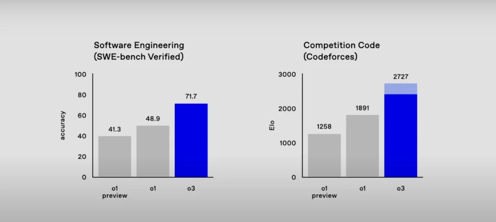
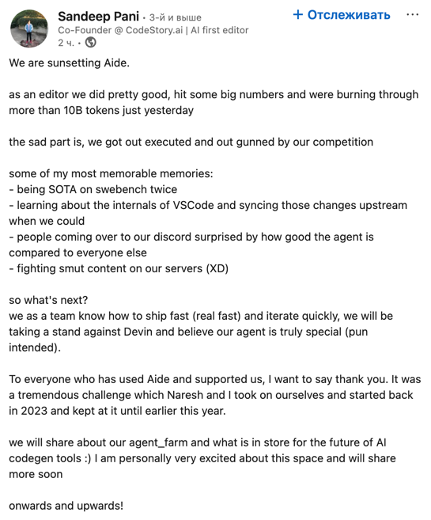

Programming Paradigms
AI Assisted Programming
Alex Avdiushenko
February 27, 2025
Let's start with an example from math
Prove that the dashed lines pass through one common point
Mistake!
Mistake!

This is amazingly correct!
- Wikipedia article "Malfatti_circles"
- Main steps of the human proof (o3-mini-high and Crok 3 could not find it):
- Homotheties for each pair of circles give us centers $A_2, B_2, C_2$
- These three homotheties centers lie on one line by Monge's theorem
- The final step is Desargues's theorem for triangles $ABC$ and $A_1B_1C_1$
- And we wait for the next, even smarter version of GPT...
The same in coding
Everybody Has a Brilliant AI Assistant – It Always Ready to Help!
- ✨ Guide your thinking process like a pro
- 🔍 Quickly search for the most relevant information
- 💡 Effortlessly generate insights that spark ideas
We can focus on what truly matters: critical thinking, decision-making and verification
IT industry is transforming the same way!
- 🤖 AI models now write code better than Juniors and Middles
- ⚡ They do it faster, cheaper, and in any programming language
- 📈 You need to level up to Senior roles!
Essential Skills for the AI Era:
- 🗣️ Mastering communication with AI models: it's becoming a crucial skill
- 👥 Developing stronger soft skills for human interaction
Focus on what AI can't replace: leadership, architecture decisions, and human collaboration
The Future of Software Development with AI
- 🔬 Core AI Systems Development: Companies like OpenAI, Anthropic building foundational models
- 🛠️ AI Integration Specialists
- Tech: JetBrains, VS Code...
- Healthcare: Diagnostic systems, medical imaging
- Science: Research analysis, lab automation
- Manufacturing: Process optimization, quality control
Two major career paths are emerging: AI core development and domain-specific AI implementation
Comparison of AI tools
| Feature | GitHub Copilot | Cursor | JetBrains AI + Junie | V0 by Vercel | Replit AI |
|---|---|---|---|---|---|
| Best Use | Inline code suggestions | Project-wide context generation | IDE integration | Project-wide contributions | Cloud-based coding |
| Key Focus | Multilingual support | AI-enhanced editor | Code control | Adaptive learning | Collaboration tools |
| Environment | VS Code, Neovim | Cursor-based editor | JetBrains IDE | Vercel platform | Browser IDE |
Problems of vibe coding and losing control
- Recent post on X/Twitter from some developer
- Flagship models are still unable to solve real coding tasks
- Video about Subagents for fighting hallucinacions and other problems
One more problem (24.02.2025)
What else can you look at?
- Vibe coding from Vastrik
- LLM codegen workflow
- Short video about using Junie agent
Let's switch to Demo in PyCharm after the break.